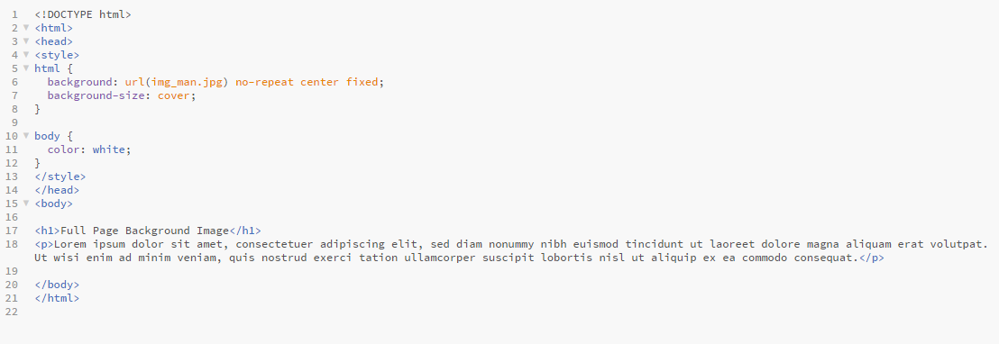

Dette næste eksempel viser hvordan vi kan have et baggrundsbillede i sin fulde størrelse hvor billedet har en fixed og centeret position. Vi bruger html elementet hvor elementets højde er altid den højde ens browers vinduet er i - også setter vi en fixed og centeret baggrund på det og så justere vi størrelsen med background-size proterty:
